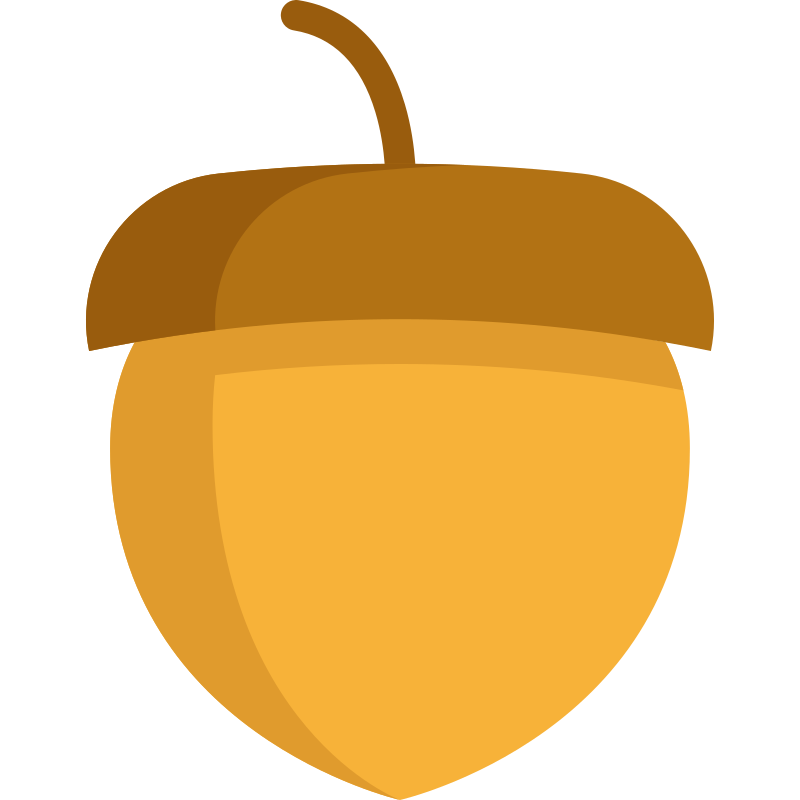
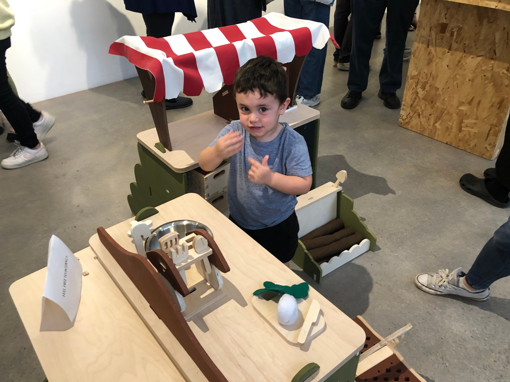

Thesis Research
- Four core pain points identified
- Stakeholder interview synthesis
- Design principles for inclusive play
Sprout to Plate
An honors thesis exploring modular, gender-neutral playsets for preschool settings through hands-on research and iterative design.

Classroom observations & stakeholder interviews
Classroom observations, educator interviews, and synthesis of pain points into four core themes.
Sketches, mood boards, and modular geometry explorations with neutral palettes.
Cardboard prototypes tested for scale and usability.
A modular, gender-neutral playset with natural materials, integrated storage, and ASTM compliance.
Dive into the research, process, and outcomes of this senior design project.
This thesis asks how modular, gender-neutral playsets can address the limitations of current pretend-play furniture in preschool and therapy settings.
Natural birch plywood, canvas, silicone, and nontoxic ABS plastic were selected for durability, sensory feedback, and ASTM F963 compliance.
It features wheelchair-accessible reach ranges, gender-neutral colors, varied sensory textures, and open-ended scenarios that avoid prescriptive roles.